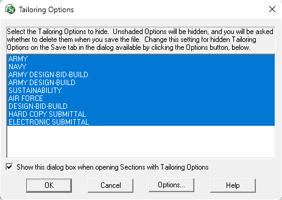
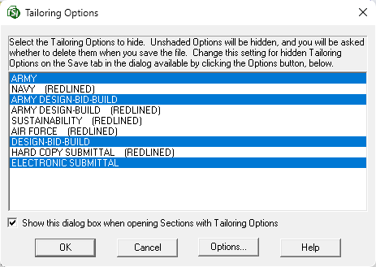

This command can also be executed from the SI Editor's Right-click menu.
The Tailoring Options command allows you to display and manage the existing Tailoring Options throughout the Section. Select or deselect Tailoring Options from the list to show or hide them, customizing your view by activating or deactivating single or multiple Tailoring Options as required.

If Show this dialog box when opening Sections with Tailoring Options is checked, the Tailoring Options window will automatically appear when you open a Section that contains Tailoring.
 If you unchecked the Show this dialog box when opening Sections with Tailoring Options, so the Tailoring Options window no longer appears when you open a Section that contains Tailoring, refer to the SI Editor's Tools menu > Options > Edit tab and check Show Tailoring Options when opening Sections.
If you unchecked the Show this dialog box when opening Sections with Tailoring Options, so the Tailoring Options window no longer appears when you open a Section that contains Tailoring, refer to the SI Editor's Tools menu > Options > Edit tab and check Show Tailoring Options when opening Sections.
When you open a Section with Tailoring Options, the Tailoring (TAI) tag will surround the tailored text. Tailoring Options are designed to simplify specification editing by providing a method for pre-editing information marked with TAI tags by the Master Specification Technical Proponent. This provides the ability to include or exclude tailored text, thereby eliminating requirements that do not pertain to the Job without manually editing each occurrence.
 The disposition of any hidden Tailoring Options, when a Section is closed, is controlled by the related selections made on the Tools menu > Options > Save tab within the drop-down box below When Saving. You should review these options before using this function to avoid permanently removing options you may want to retain.
The disposition of any hidden Tailoring Options, when a Section is closed, is controlled by the related selections made on the Tools menu > Options > Save tab within the drop-down box below When Saving. You should review these options before using this function to avoid permanently removing options you may want to retain.
 Managing Tailoring Options within a Master by adding or removing individual instances within a Section should be done through the Insert menu > Tailoring command. You can also manage Tailoring Options for a Job through the SpecsIntact Explorer's File menu > Tailor, or individual Sections through the Sections menu > Tailor.
Managing Tailoring Options within a Master by adding or removing individual instances within a Section should be done through the Insert menu > Tailoring command. You can also manage Tailoring Options for a Job through the SpecsIntact Explorer's File menu > Tailor, or individual Sections through the Sections menu > Tailor.
 Grammatical inconsistencies may occur during the Tailoring of a Job or Section, specifically when Tailoring Options are removed. The specification writers and editors are responsible for identifying and correcting these inconsistencies.
Grammatical inconsistencies may occur during the Tailoring of a Job or Section, specifically when Tailoring Options are removed. The specification writers and editors are responsible for identifying and correcting these inconsistencies.
When using Revisions, the deselected (unshaded) Tailoring Options will be redlined. If the Tailoring Option contains more than one attribute, such as <TAI OPT=Army, Navy, Air Force</TAI>, the deselected (unshaded) attribute will be removed, but not redlined. Hidden Tailoring Options can be restored provided that neither the Section nor the SI Editor has been closed.
 To restore the hidden Tailoring Options before saving and closing the Section, return to the Tailoring Options window, select the unshaded Tailoring Option you want to restore, and click OK.
To restore the hidden Tailoring Options before saving and closing the Section, return to the Tailoring Options window, select the unshaded Tailoring Option you want to restore, and click OK.
 Redlines are applied when a Section is saved and closed. Redlined Tailoring Options cannot be globally restored, but individual ones can be restored by using the SI Editor's Edit menu > Undelete Redlined Revisions. When using Revisions, hidden Tailoring Options will display '(REDLINED)' next to their name when the Section is reopened.
Redlines are applied when a Section is saved and closed. Redlined Tailoring Options cannot be globally restored, but individual ones can be restored by using the SI Editor's Edit menu > Undelete Redlined Revisions. When using Revisions, hidden Tailoring Options will display '(REDLINED)' next to their name when the Section is reopened.

When Tailoring without Revisions, the deselected (unshaded) Tailoring Options will be hidden. If the Tailoring Options contains more than one attribute such as <TAI OPT=Army, Navy</TAI>, the deselected (unshaded) attribute will be removed. You can restore hidden Tailoring Options in a saved Section, provided you haven't closed the Section or the SI Editor. To restore, select the unshaded options and click OK.
 Once you have saved and closed the Section, all hidden Tailoring Options will be deleted and cannot be restored.
Once you have saved and closed the Section, all hidden Tailoring Options will be deleted and cannot be restored.
 The OK button will execute and save the selections made.
The OK button will execute and save the selections made.
 The Cancel button will close the window without recording any selections or changes entered.
The Cancel button will close the window without recording any selections or changes entered.
The Options button opens the SI Editor's Tools menu > Options window.
 The Help button will open the Help Topic for this window.
The Help button will open the Help Topic for this window.
 Watch the Tailoring a New Job eLearning module within Chapter 2 - Creating a Job and Adding Sections.
Watch the Tailoring a New Job eLearning module within Chapter 2 - Creating a Job and Adding Sections.
Users are encouraged to visit the SpecsIntact Website's Support & Help Center for access to all of our User Tools, including Web-Based Help (containing Troubleshooting, Frequently Asked Questions (FAQs), Technical Notes, and Known Problems), eLearning Modules (video tutorials), and printable Guides.
| CONTACT US: | ||
| 256.895.5505 | ||
| SpecsIntact@usace.army.mil | ||
| SpecsIntact.wbdg.org | ||